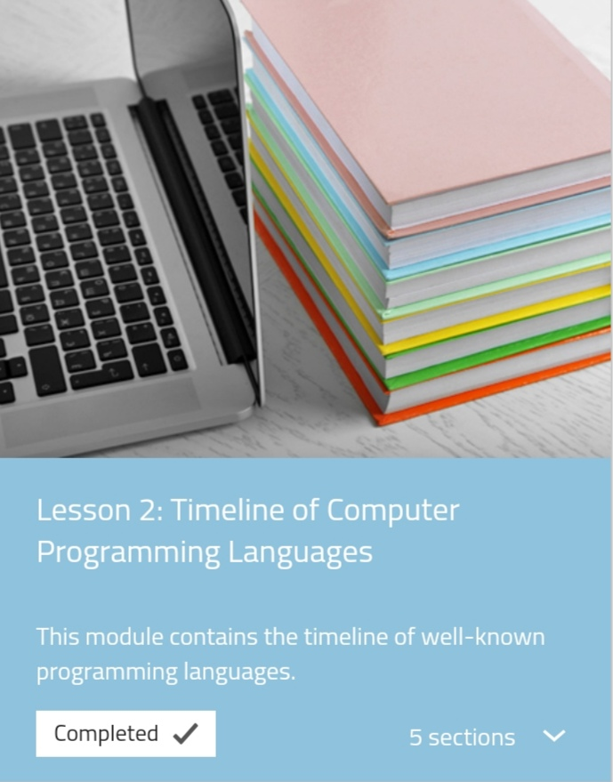
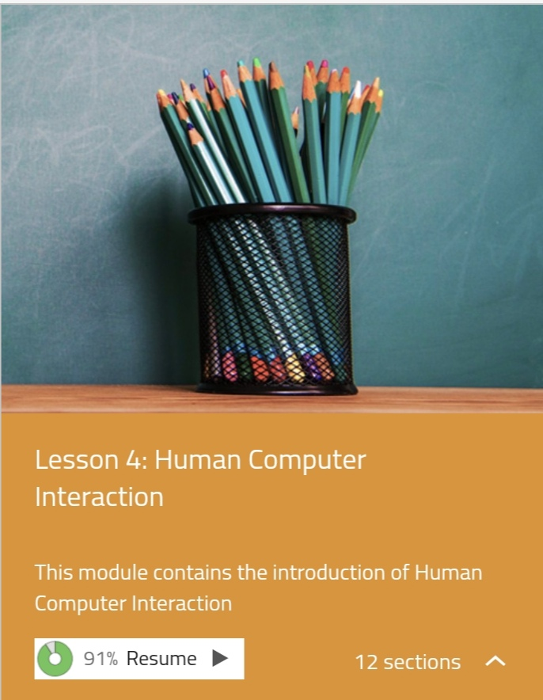
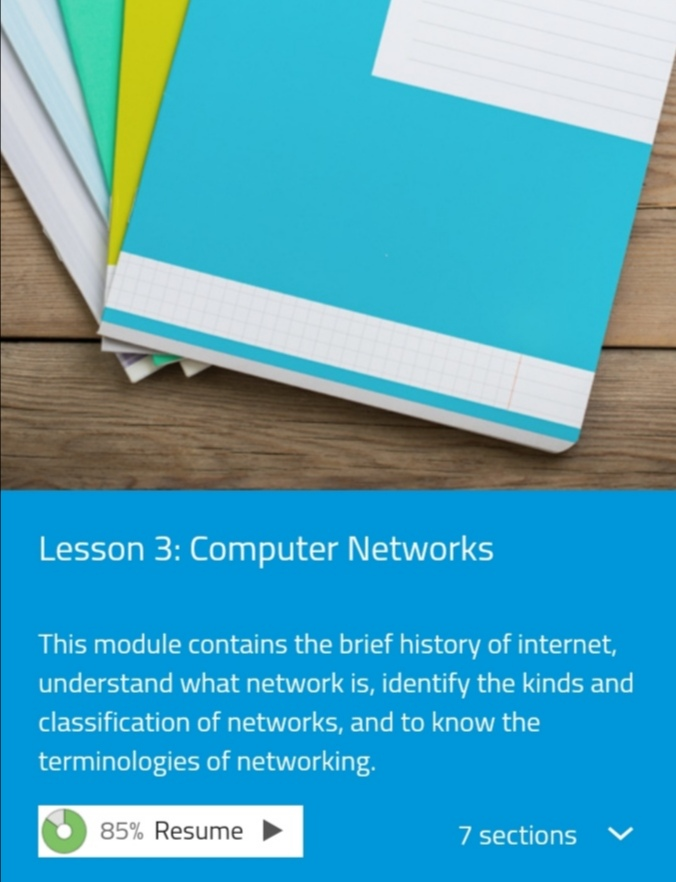

In this lesson, I learned that computing offers a wide range of professions and career opportunities. From software development to data analysis, there are numerous paths one can take in the field of computing. Additionally, I discovered that these careers often emphasises the importance of continuously updating and expanding my knowledge in order to stay competitive in this rapidly evolving field. Overall, this lesson has sparked my interest and motivation to explore different areas within computing and pursue a career that aligns with my skills and interests.



